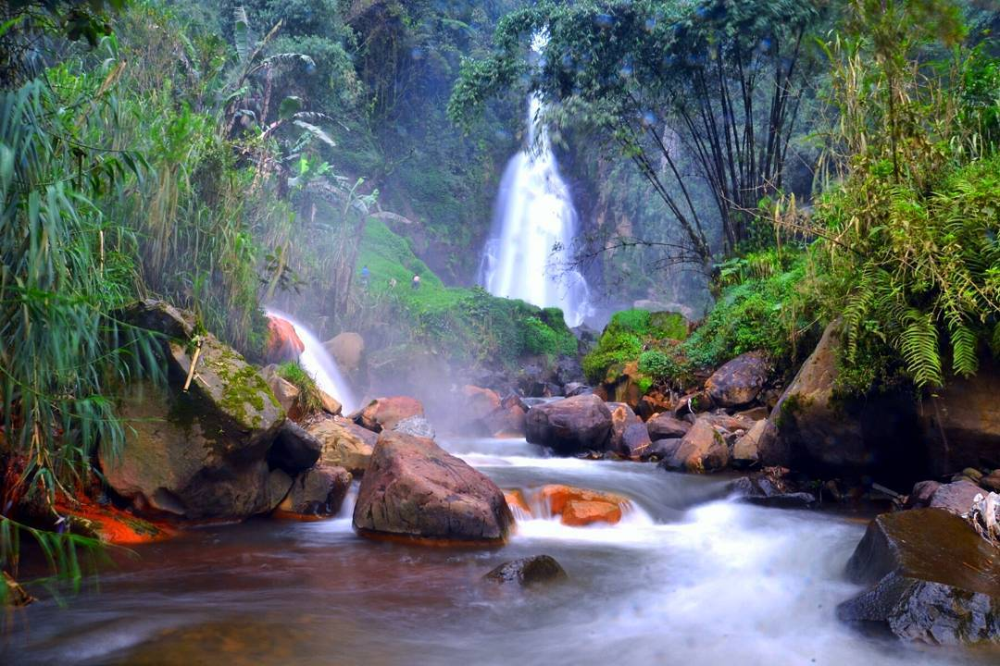

Curug Mrawu
Lokasi
Wisata Curug Mrawu Banjarnegara Jawa Tengah adalah salah satu tempat wisata yang berada di Desa Giritirta, Kecamatan Pejawaran, Kabupaten Banjarnegara, Jawa Tengah, Indonesia.
Informasi Umum
Wisata Curug Mrawu Banjarnegara Jawa Tengah merupakan tempat wisata yang harus anda kunjungi karena pesona keindahannya tidak ada duanya. Penduduk lokal daerah Wisata Curug Mrawu Banjarnegara Jawa Tengah juga sangat ramah tamah
terhadap wisatawan lokal maupun wisatawan asing. Kota Banjernegara juga terkenal akan Wisata Curug Mrawu Banjarnegara Jawa Tengah yang sangat menarik untuk dikunjungi.
Di kota Banjarnegara memiliki Curug yang cukup bagus dan terbilang besar yaitu Curug Mrawu yang memiliki aliran sungainya menyatu dan menjadi satu sebagai sumber utama dari Sungai Mrawu. Curug Mrawu merupakan objek wisata yang
cukup apik dengan ketinggian yang dimiliki sekitar 50 meter. Untuk sungai Mrawu sendiri oleh warga setempat dimanfaatkan sebagai sumber air untuk pertanian mereka di beberapa kecamatan yang ada di wilayah Banjarnegara.
Curug Mrawu merupakan memiliki pemandangan alamnya yang indah, kepopuleran dari Curug Mrawu ini dikarenakan banyak kepercayaan dari warga yang mengungkapkan bahwa air yang mengalir ini bisa mengobati berbagai macam penyakit
seperti rematik dan penyakit kulit lainnya. Maka tak heran jika banyak orang atau wisatawan yang sangat penasaran untuk berkunjung ke tempat ini.
Transportasi
Tentunya sarana transportasi apa yang anda pakai untuk berwisata ke Curug Mrawu Banjarnegara Jawa Tengah dengan memakai kendaraan pribadi seperti : Mobil atau motor pribadi. Anda bisa meminta panduan arah ke wisata Curug Mrawu Banjarnegara Jawa Tengah di google maps yang terpasang di smartphone anda. Karena memakai kendaraan pribadi akan lebih menyenangkan dari pada memakai kendaraan umum. Akan tetapi jika anda memakai kendaraan umum seperti : bis umum atau angkutan lainnya juga bukan masalah besar, pasalnya anda bisa berhenti di terminal bus kota Banjarnegara. Setelah itu melanjutkan dengan menggunakan ojek ataupun kendaraan pribadi anda menuju Desa Giritirta hingga sampai di lokasi Wisata Curug Mrawu tersebut.di Desa Giritirta, Kecamatan Pejawaran, Kabupaten Banjarnegara, Jawa Tengah, Indonesia.